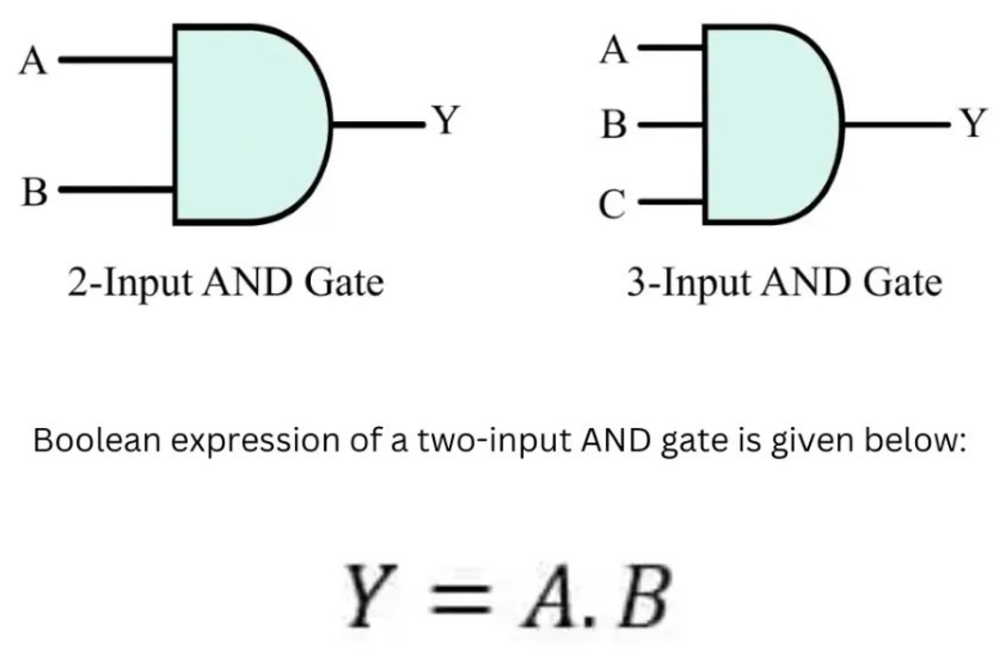
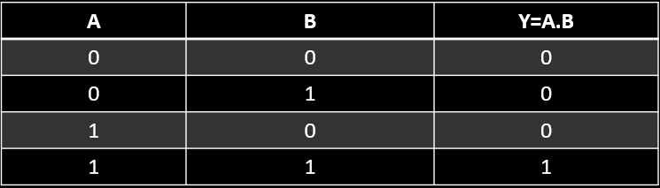

AND GATE
The AND gate is a logic gate that can accept two or more inputs but gives out only one output. It can be implemented by using universal gates as well as diodes. In digital electronics, data transmissions and alarm circuits are monitored by using AND gates. Digital measuring instruments also use AND gates.
Logic Diagram:
Truth Table:
